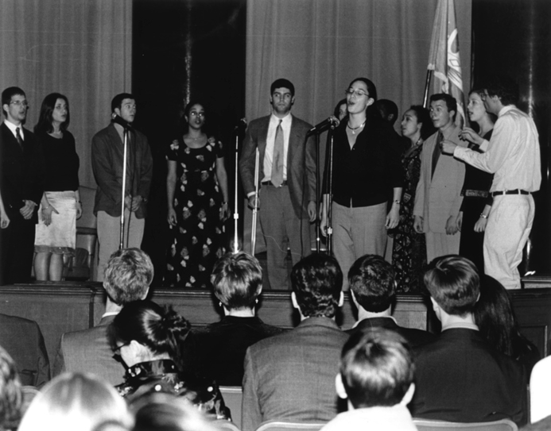

Back
Uptown Vocal sang
Unforgettable
at the Spectator's Brian K. Malmon Memorial Award presentation (below) as well as
Time After Time
and
Helplessly Hoping
in February 2001.

Back
dke4@columbia.edu